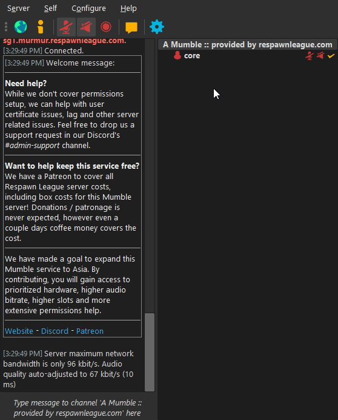
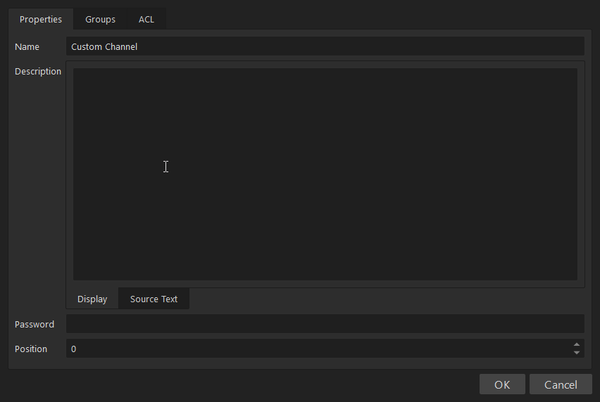
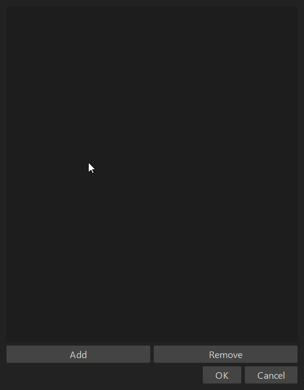

Channels & Custom Groups
Personalising your Mumble Server.
Creating, Managing and Locking Channels
Creating a Channel is simple. You just right click the root channel (or the channel you want to put it under) and Add, then add a Name, Description (not required) and you can then position it if you want.
Managing Channels
This is where channels can get more complicated. You can add custom groups containing specific users for each channel. This is useful if you want to give only your team access to the channel, without requiring a password. This is more advanced and we don't intend to cover it any further than the GIF below.
Locking Channels
This is the easiest way to only allow certain people into channels. You can add a Password via the Edit option when right clicking on a channel. To actually be able to access the channel, you then need to go to Server > Access Tokens at the top and add that password as a token. This will then override enter permissions and let anyone with the password in.
More Information on Channels
There are plenty of tutorials online that help with more complicated channel operations, such as Listening Channels, more specific Permissions and more.